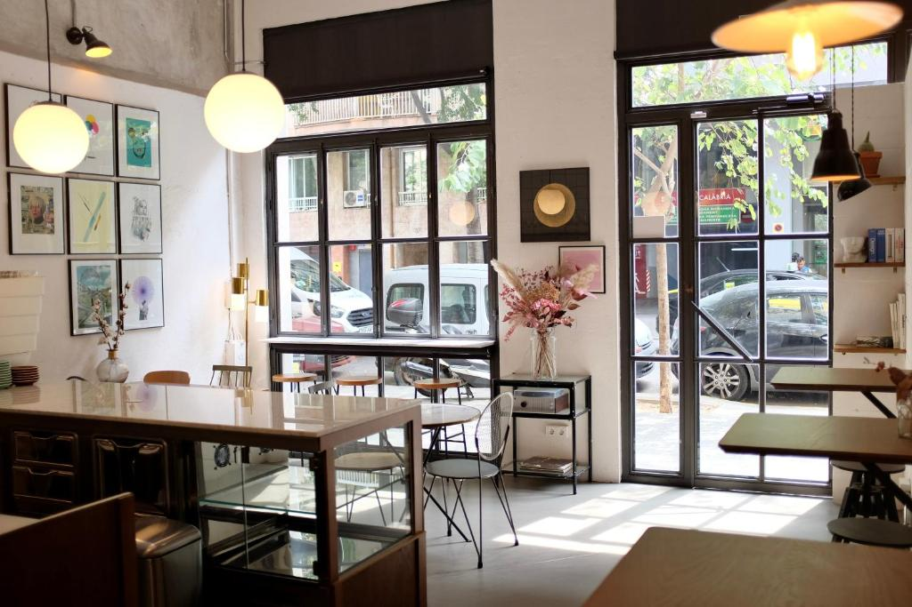
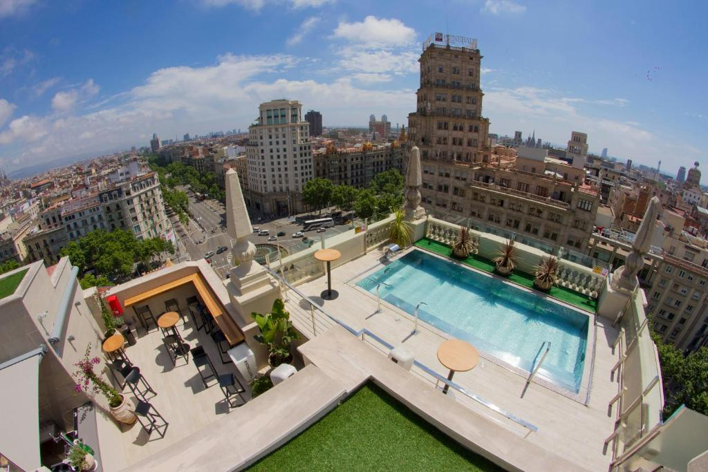
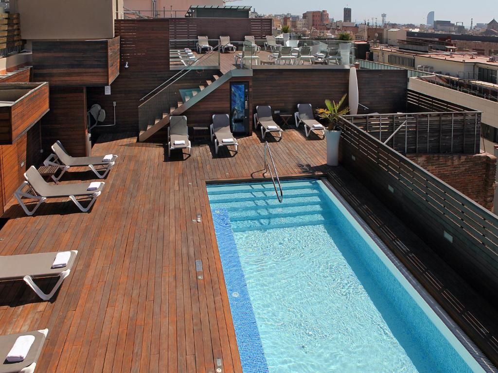

|
|
Hoteles de Barcelona |
|  |
El Magatzem 128 ofrece WiFi gratuita en todas las zonas y se encuentra en Barcelona, a 1,4 km de la estación de tren de Sants y de la Fuente Mágica de Montjuic. Todas las habitaciones disponen de aire acondicionado y TV de pantalla plana, mientras que algunas tienen caja fuerte. El Magatzem 128 queda cerca de lugares de interés como el paseo de Gracia, la estación de metro Passeig de Gracia y la Casa Batlló. |
Valoración 6.8 Wifi gratis ✓ |
|  |
El Atenas Catalonia está situado a 3 paradas de metro del centro de Barcelona y tiene una piscina en la azotea con vistas a la cercana torre Agbar y a la Sagrada Familia. El hotel sirve un desayuno buffet con cocina en vivo. También hay una cafetería y una piscina en la planta 11 con unas vistas espectaculares a la ciudad. Este hotel se encuentra a poco más de 1 km de la Sagrada Familia y a 15 minutos a pie del centro comercial Glòries. Spa y centro de bienestar. |
Valoración 7,8 parking privado ✓ |
|  |
Se encuentra junto a la plaza de Catalunya y las famosas Ramblas de Barcelona. Ofrece una pequeña piscina en la azotea con solárium y tumbonas, WiFi gratuita y habitaciones con TV de pantalla plana. El Hotel Lleó está a poca distancia a pie de muchos lugares de interés de Barcelona. A las parejas les encanta la ubicación. Piscina. |
Valoración 7.1 permitido fumar ✓ |